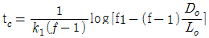
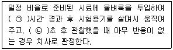
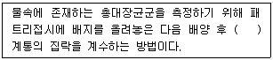
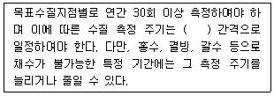

수질환경산업기사 (2017-03-05 기출문제)
1과목: 수질오염개론
1. 2차처리 유출수에 포함된 10mg/L의 유기물을 분말활성탄 흡착법으로 3차처리하여 유출수가 1mg/L가 되게 만들고자 한다. 이 때 폐수 1L당 필요한 활성탄의 양(g)은? (단, 흡착식은 Freundlich 등온식을 적용, K = 0.5, n = 2)
- 9
- 12
- 16
- 18
(정답률: 55%)

2. 포도당(C6H12O6) 500mg이 탄산가스와 물로 완전 산화하는데 소요되는 이론적 산소요구량(mg)은?
- 512
- 521
- 533
- 548
(정답률: 80%)
3. 지하수의 특성을 설명한 것으로 가장 거리가 먼 것은?
- 탁도가 높다.
- 자정작용이 느리다.
- 수온의 변동이 적다.
- 국지적인 환경조건의 영향을 크게 받는다.
(정답률: 73%)
4. 1,000개의 세포가 5시간 후에 100,000개로 증식했다면 세대시간(분)은? (단, 단위시간에 일어난 분열횟수(k)=(logXt-logXo)/(0.30)-t, 출발시간의 세포수 = Xo, 일정한 시간이 경과된 후의 세포수 = Xt)(오류 신고가 접수된 문제입니다. 반드시 정답과 해설을 확인하시기 바랍니다.)
- 80
- 60
- 45
- 30
(정답률: 39%)
5. 남조류(Blue-green algae)에 관한 설명으로 틀린 것은?
- 독립된 세포핵이 있다.
- 세포벽의 구조는 박테리아와 흡사하다.
- 광합성 색소가 엽록체 안에 들어 있지 않다.
- 호기성 신진대사를 하며 전자공여체로 물을 사용한다.
(정답률: 56%)
6. 0.04M-NaOH용액의 농도(mg/L)는? (단, Na 원자량 23)
- 1,000
- 1,200
- 1,400
- 1,600
(정답률: 78%)
7. 수온주높이 300mm는 수주로 몇 mm인가? (단, 표준 상태 기준)
- 1,960
- 3,220
- 3,760
- 4070
(정답률: 68%)
8. 해수의 화학적 성질에 관한 설명으로 가장 거리가 먼 것은?
- 해수의 pH는 8.2로서 약알칼리성을 가진다.
- 해수의 주요성분 농도비는 지역에 따라 다르며 염분은 적도해역에서 가장 낮다.
- 해수의 밀도는 수온, 염분, 수압의 함수이며 수심이 깊을수록 증가한다.
- 해수 내에 주요성분 중 염소이온은 19,000mg/L 정도로 가장 높은 농도를 나타낸다.
(정답률: 70%)
9. 저수지 및 호소의 sediment()는 수중의 환경변화에 따라 수중으로 오염물질을 유출함으로써 장기적인 내부오염원으로 작용을 한다. 오염물질 유출에 관여하는 영향인자에 대한 설명으로 가장 거리가 먼 것은?
- 수중의 DO 농도가 감소함에 따라 유출이 증가한다.
- 수중의 pH가 10 이상으로 높아질수록 유출이 증가한다.
- 수중의 pH가 5 이하로 줄어들수록 유출이 증가한다.
- 수온은 유출과 관계가 없다.
(정답률: 61%)
10. 하천의 DO가 6.3mg/L, BODu가 17.1mg/L일 때 용존산소곡선(DO SagCurve)에서 임계점에 달하는 시간(day)은? (단, 온도는 20℃, 용존산소 포화량은 9.2mg/L, K1= 0.1/day, K2 = 0.3/day, f = K2/K1,

)- 약 1.0
- 약 1.5
- 약 2.0
- 약 2.5
(정답률: 48%)
11. 탄소동화작용을 하지 않는 다세포 식물로서 유기물을 섭취하여 수중에 질소나 용존산소 부족한 경우에도 잘 성장하는 미생물은?
- Bacteria
- Algae
- Fungi
- Protozoa
(정답률: 77%)
12. 여름 정체기간 중 호수의 깊이에 따른 CO2와 DO 농도의 변화를 설명한 것으로 옳은 것은?
- 표수층에서 CO2 농도가 DO 농도 보다 높다.
- 심해에서 DO 농도는 매우 낮지만 CO2농도는 표수층과 큰 차이가 없다.
- 깊이가 깊어질수록 CO2 농도 보다 DO농도가 높다.
- CO2 농도와 DO 농도가 같은 지점(깊이)이 존재한다.
(정답률: 74%)
13. 개미산(HCOOH)의 ThOD/TOC의 비는?
- 1.33
- 2.14
- 2.67
- 3.19
(정답률: 65%)
14. 글리신(C2H5O2N) 10g이 호기성조건에서 CO2, H2O 및 HNO3로 변화될 때 필요한 총 산소량(g)은?
- 15
- 20
- 30
- 40
(정답률: 49%)
15. 부영양호(eutrophic lake)의 특성에 해당하는 것은?
- 생산과 소비의 균형
- 낮은 영양 염류
- 조류의 과다발생
- 생물종 다양성 증가
(정답률: 76%)
16. 빗물의 특성에 관한 설명으로 가장 거리가 먼 것은?
- 빗물은 낙하하면서 대기 중의 CO2를 포화상태로 녹여 순수한 빗물의 pH를 약 5.6으로 만든다.
- 일반적으로 빗물은 용해성분이 많아 경수이며 완충작용이 강하다.
- SO2나 NO2 같은 기체가 빗물에 녹아 H2SO4 와 HNO3가 되어 산성비를 만든다.
- 수자원으로서는 비정기적인 강우패턴과 집수·저장방법 문제로 가치가 비교적 크지 않은 편이다.
(정답률: 70%)
17. 시험용 동물의 50%를 사망시킬 때 그 환경 중의 약물 농도를 나타내는 것은?
- TLN50
- LD50
- LC50
- LI50
(정답률: 80%)
18. Ca(OH)2 800mg/L, 용액의 pH는? (단, Ca(OH)2는 완전해리하며, Ca의 원자량은 40)
- 약 12.1
- 약 12.3
- 약 12.7
- 약 12.9
(정답률: 41%)
19. 물이 가지는 특성으로 틀린 것은?
- 물의 밀도는 0℃에서 가장 크며 그 이하의 온도에서는 얼음형태로 물에 뜬다.
- 물은 광합성의 수소공여체이며 호흡의 최종산물이다.
- 생물체의 결빙이 쉽게 일어나지 않는 것은 융해열이 크기 때문이다.
- 물은 기화열이 크기 때문에 생물의 효과적인 체온조절이 가능하다.
(정답률: 79%)
20. 반응조에 주입된 물감의 10%, 90%가 용출되기까지의 시간을 t10, t90이라할 때 Morrill지수는 t90/t10으로 나타낸다. 이상적인 Plug flow인 경우의 Morrill지수 값은?
- 1 보다 작다.
- 1 보다 크다.
- 1 이다.
- 0 이다.
(정답률: 79%)
2과목: 수질오염방지기술
21. BOD 1,000mg/L, 유량1,000m3/day인 폐수를 활성슬러지법으로 처리하는 경우, 포기조의 수심을 5m로 할 때 필요한 포기조의 표면적(m2)은? (단, BOD 용적부하 0.4kg/m·day)
- 400
- 500
- 600
- 700
(정답률: 66%)
22. 폐수 유입량이 1,000m3/day이고, 포기조의 SVI가 100일 때 반송 슬러지의 양(m3/day)은? (단, SV30 = 50%)
- 1,000
- 850
- 700
- 550
(정답률: 59%)
23. 염소의 살균력에 관한 내용으로 틀린것은?
- pH가 낮을수록 살균능력이 크다.
- 온도가 낮을수록 살균능력이 크다.
- HOCl은 OCl-보다 살균력이 크다.
- Chloramine은 OCl-보다 살균력이 작다.
(정답률: 71%)
24. 입자간 거리가 2cm이고, 상대속도가 100cm/s인 두 유체 입자의 속도경사(sec-1)는?
- 25
- 50
- 75
- 100
(정답률: 73%)
25. 폐수처리 과정인 침전 시 입자의 농도가 매우 높아 입자들끼리 구조물을 형성하는 침전형태는?
- 농축침전
- 응집침전
- 압밀침전
- 독립침전
(정답률: 65%)
26. 식품공장 폐수를 생물학적 호기성 공정으로 처리하고자 한다. 수질을 분석한 결과, 질소분이 없어 요소((NH2)2CO)를 주입하고자 할 때 필요한 요소의 양(mg/L)은? (단, BOD = 5,000mg/L, TN = 0, BOD : N : P = 100 : 5 : 1 기준)
- 약 430
- 약 540
- 약 670
- 약 790
(정답률: 53%)
27. 회전원판법(RBC)의 단점으로 가장 거리가 먼 것은?
- 일반적으로 회전체가 구조적으로 취약하다.
- 처리수의 투명도가 나쁘다.
- 충격부하 및 부하변동에 약하다.
- 외기기온에 민감하다.
(정답률: 68%)
28. 함수율 95%의 슬러지를 함수율 75%의 탈수케익으로 만들었을 때, 탈수 전 슬러지의 체적대비 탈수 후 탈수케익의 체적의 변화는? (단, 분리액으로 유출된 슬러지양은 무시하며, 탈수 전 슬러지와 탈수 후 탈수 케익의 비중은 모두 1.0으로 가정)
- 1/3
- 1/4
- 1/5
- 1/6
(정답률: 77%)
29. BAC(Biological Activated Carbon)공법을 이용한 고도 정수 처리 시 장점이 아닌 것은?
- 오염 물질에 따라 생물분해, 흡착작용이 상호 보완하여 준다.
- 생물학적으로 분해 불가능한 독성물질이라도 흡착기능에 의하여 오염물질 제거가 가능하다.
- 분해 속도가 빠른 물질이나 적응시간이 필요없는 유기물 제거에 효과적이다.
- 부유물질과 유기물 농도가 낮은 깨끗한 유출수를 배출한다.
(정답률: 53%)
30. 생물학적 방법으로 폐수 중의 질소를 제거 하려고 할 때 가장 적절하지 않은 공법은?
- A/O 공법
- VIP 공법
- UCT 공법
- 5단계 Bardenpho 공법
(정답률: 76%)
31. 표준활성슬러지법에서MLSS농도(mg/L)의 표준 운전범위는?
- 1,000 ~ 1,500
- 1,500 ~ 2,500
- 2,500 ~ 4,500
- 4,500 ~ 6,000
(정답률: 77%)
32. 40mg/L의 황산제일철(FeSO4·7H2O)을 사용하여 폐수를 처리하고자 한다. 이 물에 알칼리도가 없는 경우 공급하여야 하는 Ca(OH)2의 양(mg/L)은? (단, 분자량 : FeSO4·7H2O = 277.9, Ca(OH)2 = 74.1)
- 10.7
- 21.4
- 32.1
- 42.8
(정답률: 44%)
33. 포기조 혼합액을 30분간 침전시킨 뒤의 침전물의 부피는 400mL/L이었고, MLSS농도가 3,000mg/L이었다면 침전지에서 침전상태는?
- 슬러지의 침전이 양호하다.
- 슬러지 팽화로 인하여 침전이 되지 않는 다.
- 슬러지 부상(Sludge rising)현상이 발생하여 슬러지 덩어리가 떠오른다.
- 슬러지 플록이 제대로 형성되지 못하고 미세하게 분산한다.
(정답률: 70%)
34. 일반적으로 회전원판법은 원판의 몇 %가 물에 잠긴 상태에서 운영되는가?
- 10 ~ 20%
- 30 ~ 40%
- 50 ~ 60%
- 70 ~ 80%
(정답률: 65%)
35. 상수 원수 내의 비소 처리에 관한 설명으로 옳지 않은 것은?
- 응집처리에는 응집침전에 의한 제거방법과 응집여과에 의한 제거방법이 있다.
- 이산화망간을 사용하는 흡착처리에서는 5가비소를 제거할 수 있다.
- 흡착시의 pH는 활성알루미나에서는 1 ~ 3이 효과적인 범위이다.
- 수산화세륨을 흡착제로 사용하는 경우는 3가 및 5가 비소를 흡착할 수 있다.
(정답률: 53%)
36. 하수처리에 적용되는 물리적 조작과 기능에 대한 설명으로 틀린 것은?
- 분쇄 – 수로 내에서 고형물을 분쇄하는 것으로 예비처리 조작이다.
- 유량조정 – 후속의 처리시설에 걸리는 유량 및 수질부하를 균등하게 하는 조작이다.
- 응집 – 부유물질의 침전특성을 개선하는 조작이다.
- 부상분리 – 고형물이나 부유성 물질의 제거를 위해 사용되는 조작이다.
(정답률: 70%)
37. 생물학적 인 제거 공법에서 호기성 공정의 주된 역할은?
- 용해성 인의 과잉 산화
- 용해성 인의 과잉 방출
- 용해성 인의 과잉 환원
- 용해성 인의 과잉 섭취
(정답률: 66%)
38. 냄새역치(TON, threshold odornumber)에 대한 설명으로 틀린 것은?
- 냄새의 강도를 나타낼 때 사용한다.
- 관능분석에 의해 결정한다.
- 같은 시료에 대해서는 시험자가 다르더라도 TON값이 일정하다.
- TON값이 클수록 시료의 냄새가 강하다고 볼 수 있다.
(정답률: 78%)
39. 공장에서 pH 2인 황산 폐수 180m3/day가 배출되고 있다. 이 폐수를 중화시키고자 할 때 필요한 NaOH 양(kg/day)은? (단, NaOH 순도 90%)
- 약 60
- 약 70
- 약 80
- 약 90
(정답률: 47%)
40. 공장폐수의 BOD 1kg을 제거하기 위해 필요한 산소량이 1kg이다. 공기 1m3에 함유되어 있는 산소량이 0.277kg이고 활성슬러지에서 공기용해율이 4%(부피%)라 할때, BOD 5kg을 제거하는데 필요한 공기량(m3)은? (단, 공기 내 각 성분은 동일한 비율로 용해된다고 가정)
- 451
- 554
- 632
- 712
(정답률: 48%)
3과목: 수질오염공정시험방법
41. 분석을 위해 채취한 시료수에 다량의 점토질 또는 규산염이 함유된 경우, 적합한 전처리 방법은?
- 질산 – 황산에 의한 분해
- 질산 – 과염소산 – 불화수소산에 의한 분해
- 질산 – 황산 – 과염소산에 의한 분해
- 회화에 의한 분해
(정답률: 64%)
42. 물속의 냄새 측정 시 잔류염소 냄새는 측정에서 제외한다. 잔류염소 제거를 위해 첨가하는 시약은?
- 티오황산나트륨용액
- 과망간산칼륨용액
- 아스코르빈산암모늄용액
- 질산암모늄용액
(정답률: 65%)
43. 수은(냉증기 - 원자흡수분광광도법)측정 시 물속에 있는 수온을 금속수은으로 산화시키기 위해 주입하는 것은?
- 이염화주석
- 아연분말
- 염산하이드록실아민
- 시안화칼륨
(정답률: 56%)
44. 4각 웨어에 의하여 유량을 측정하려고 한다. 수두가 90cm이고, 절단 폭이 1.0m일 때 유량(m3/min)은? (단, 유량계수 K = 1.2)
- 약 1.03
- 약 1.26
- 약 1.37
- 약 1.53
(정답률: 64%)
45. 아질산성 질소 표준원액(약 0.25mg/mL)을 제조하기 위해서 아질산나트륨(NaNO2)을 데시케이터에서 24시간 건조시킨 후, 일정량을 취하여 물에 녹이고 클로로포름 0.5mL와 물을 넣어 500mL로 하였다. 표준원액 제조를 위해 취한 아질산나트륨의 양(g)은? (단, 원자량 Na = 23)
- 약 0.31
- 약 0.62
- 약 1.23
- 약 2.46
(정답률: 34%)
46. 분석에 요구되는 시료의 최대 보존기간이 가장 짧은 측정항목은?
- 염소이온
- 부유물질
- 총인
- 용존 총인
(정답률: 57%)
47. 기체크로마토그래피법에서 검출하고자 하는 화합물에 대한 검출기가 바르게 연결된 것은?
- 유기할로겐화합물 : 열전도도 검출기(TCD), 황화합물 : 불꽃이온화 검출기(FID)
- 유기할로겐화합물 : 불꽃이온화 검출기(FID), 황화합물 : 열전도도 검출기(TCD)
- 유기할로겐화합물 : 전자포획형 검출기(ECD), 황화합물 : 불꽃광도형 검출기(FPD)
- 유기할로겐화합물 : 불꽃광도형 검출기(FPD), 황화합물 : 불꽃이온화 검출기(FID)
(정답률: 60%)
48. 유도결합플라스마 - 원자발광분광법(ICP)의 장치 구성을 순서대로 나타낸 것은?
- 시료도입부 – 광원부 – 파장선택부 – 측정부 - 기록부
- 시료도입부 – 파장분리부 – 광원부 – 검출부 - 기록부
- 시료도입부 – 고주파전원부 – 광원부 – 분광부 – 연산처리부 – 기록부
- 시료도입부 – 저주파전원부 – 분광부 – 측정부 - 기록부
(정답률: 51%)
49. 수질오염공정시험기준에 따라 분석에 요구되는 시료량은 시험항목 및 시험횟수에 따라 차이가 있으나 일반적으로 채취하는 시료의 양(L)은?
- 0.5 ~ 1
- 1.5 ~ 2
- 2 ~ 3
- 3 ~ 5
(정답률: 73%)
50. 0.1N 과망간산칼륨액의 표정에 사용되는 표준시약은?
- 무수탄산나트륨
- 옥살산나트륨
- 티오황산나트륨
- 수산화나트륨
(정답률: 52%)
51. 생물화학적산소요구량(BOD) 분석방법에 대한 설명으로 틀린 것은?
- 시료의 예상 BOD값으로부터 단계적으로 희석배율을 정하여 3~5종의 희석시료를 조제한다.
- 공장폐수나 혐기성 발효의 상태에 있는 시료는 호기성 산화에 필요한 미생물을 식종하여야 한다.
- 탄소계 BOD를 측정해야 할 경우에는 질산화 억제 시약을 첨가 한다.
- 5일 저장기간 동안 산소의 소비량이 20~40%범위안의 희석 시료를 선택하여 BOD를 계산한다.
(정답률: 50%)
52. 물벼룩을 이용한 급성 독성 시험법에서 적용되는 용어인 '치사'의 정의에 대한 설명으로 ( )에 옳은 것은?

- ㉠ 12, ㉡ 15
- ㉠ 12, ㉡ 30
- ㉠ 24, ㉡ 15
- ㉠ 24, ㉡ 30
(정답률: 69%)
53. 흡광 광도계 측광부의 광전측광에 광전 도셀이 사용될 때 적용되는 파장은?
- 자외 파장
- 가시 파장
- 근적외 파장
- 근자외 파장
(정답률: 63%)
54. 수질오염공정시험기준에서 일반적으로 적용되는 용어의 정의로 옳지 않은 것은?
- '감압'이라 함은 따로 규정이 없는 한 15mmH2O 이하를 뜻한다.
- '밀폐용기'라 함은 취급 또는 저장하는 동안에 이물질이 들어가거나 또는 내용물이 손실되지 아니하도록 보호하는 용기를 말한다.
- '냄새가 없다'라고 기재한 것은 냄새가 없거나 또는 거의 없는 것을 표시하는 것이다.
- '정확히 취하여'란 규정한 양의 액체를 부피피펫으로 눈금까지 취하는 것을 말한다.
(정답률: 82%)
55. 자외선/가시선분광법으로 정량항 때 측정항목과 그에 따른 발색시약이 잘못 연결된 것은?
- 불소 : 란탄알리자린 콤프렉속용액
- 페놀류 : 4 – 아미노안티피린과 헥사시 안화철(Ⅱ)산칼륨 용액
- 질산성질소 : 블루신 – 설퍼민산용액
- 비소 : 피리딘 – 피라졸론 용액
(정답률: 53%)
56. 총대장균군 - 막여과법에 관한 내용으로 ( )에 옳은 것은?

- 금속성 광택을 띠는 적색이나 진한 적색
- 금속성 광택을 띠는 청색이나 진한 청색
- 여러 가지 색조를 띠는 적색
- 여러 가지 색조를 띠는 청색
(정답률: 64%)
57. 알칼리성 과망간산칼륨에 의한 화학적 산소요구량(COD) 측정법에서 반응 후 적정에 사용하는 시약과 종말점에서 변하는 색은?
- Na2S2O3, 무색
- KMnO4, 엷은 홍색
- Ag2SO4, 엷은 홍색
- Na2C2O4, 적색
(정답률: 50%)
58. BOD 측정 시 산성 또는 알칼리성 시료의 중화를 위해 전처리로 넣어주는 산 또는 알칼리성용액의 양은 시료량의 얼마를 넘지 않도록 해야 하는가?
- 0.5%
- 1.5%
- 2.5%
- 3.5%
(정답률: 52%)
59. 시료의 용존산소량은 8.50mg/L이었고, 순수 중의 용존산소 포화량은 8.84mg/L이었다. 시료채취 시의 대기압이 750mmHg이었다면 용존산소포화율(%)은?
- 95.5
- 96.2
- 97.4
- 98.8
(정답률: 45%)
60. 시험에 적용되는 온도 표시로 틀린 것은?
- 실온은 1 ~ 35℃
- 찬 곳은 0℃ 이하
- 온수는 60 ~ 70℃
- 상온은 15 ~ 25℃
(정답률: 78%)
4과목: 수질환경관계법규
61. 폐수처리업에 종사하는 기술요원의 폐수처리기술요원과정의 교육기간은?
- 8시간(1일) 이내
- 2일 이내
- 4일 이내
- 6일 이내
(정답률: 64%)
62. 기타수질오염원인 수산물양식시설 중 가두리 양식어장의 시설 설치 등의 조치 기준으로 틀린 것은?
- 사료를 준 후 2시간 지났을 때 침전되는 양이 10% 미만인 부상사료를 사용한다. 다만, 10센티미터 미만의 치어 또는 종묘에 대한 사료는 제외한다.
- 부상사료 유실방지대를 수표면 상·하로 각 30센티미터 이상 높이로 설치하여야 한다. 다만, 시료유실의 우려가 없는 경우에는 그러하지 아니하다.
- 어병의 예방이나 치료를 하기 위한 항생제를 지나치게 사용하여서는 아니 된다.
- 분뇨를 수집할 수 있는 시설을 갖춘 변소를 설치하여야 하며, 수집된 분뇨를 육상으로 운반하여 호소에 재유입되지 아니하도록 처리하여야 한다.
(정답률: 57%)
63. 폐수무방류배출시설의 설치가 가능한 특정수질 유해물질이 아닌 것은?
- 구리 및 그 화합물
- 망간 및 그 화합물
- 디클로로메탄
- 1, 1 - 디클로로에틸렌
(정답률: 47%)
64. 비점오염원의 변경신고 기준으로 틀린 것은?
- 상호·대표자·사업명 또는 업종의 변경
- 총 사업면적·개발면적 또는 사업장 부지 면적이 처음 신고면적의 100분의 30이상 증가하는 경우
- 비점오염저감시설의 종류, 위치, 용량이 변경되는 경우
- 비점오염원 또는 비점오염저감시설의 전부 또는 일부를 폐쇄하는 경우
(정답률: 58%)
65. 환경부장관이 제조업의 배출시설(폐수무방류 배출시설을 제외)을 설치·운영하는 사업자에 대하여 조업정지를 명하여야 하는 경우로서 그 조업정지가 주민의 생활, 대외적인 신용, 고용, 물가 등 국민경제, 그 밖에 공익에 현저한 지장을 초래할 우려가 있다고 인정되는 경우에 조업정지처분에 갈음하여 부과할 수 있는 과징금의 최대 액수는?
- 1억원 이하
- 2억원 이하
- 3억원 이하
- 5억원 이하
(정답률: 67%)
66. 배출부과금을 부과할 때 고려해야 할 사항이 아닌 것은?
- 배출허용기준 초과 여부
- 배출되는 수질오염물질의 종류
- 배출시설의 정상가동 여부
- 수질오염물질의 배출기간
(정답률: 65%)
67. 위임업무 보고사항 중 보고 횟수가 다른 것은?
- 배출업소의 지도·점검 및 행정처분 실적
- 배출부과금 부과 실적
- 과징금 부과 실적
- 비점오염원의 설치신고 및 방지시설 설치 현황 및 행정처분 현황
(정답률: 64%)
68. 폐수 수탁처리 영업을 하려는 자의 준수사항으로 틀린 것은?
- 폐수의 처리능력과 처리가능성을 고려하여 수탁할 것
- 처리능력이나 용량 미만의 시설을 설치하거나 운영하지 아니할 것
- 등록한 사항 중 환경부령이 정하는 중요사항을 변경하는 때에는 시장·군수에게 등록할 것
- 기술능력·시설 및 장비 등을 항상 유지·점검하여 폐수처리업의 적정 운영에 지장이 없도록 할 것
(정답률: 65%)
69. 폐수무방류배출시설의 설치허가 또는 변경허가를 받은 사업자가 페수무방류배출시설에서 배출되는 폐수를 오수 또는 다른 배출시설에서 배출되는 폐수와 혼합하여 처리하거나 처리할 수 있는 시설을 설치하는 행위를 한 경우 벌칙 기준은?
- 2년 이하의 징역 또는 2천만원 이하의 벌금
- 3년 이하의 징역 또는 3천만원 이하의 벌금
- 5년 이하의 징역 또는 5천만원 이하의 벌금
- 7년 이하의 징역 또는 7천만원 이하의 벌금
(정답률: 45%)
70. 수질오염경보인 조류경보 단계 중 조류 대발생 시 취수장·정수장 관리자의 조치사항으로 틀린 것은?
- 정수의 독소분석 실시
- 정수처리 강화(활성탄 처리, 오존 처리)
- 조류증식 수심 이하로 취수구 이동
- 취수구 등에 대한 조류 방어막 설치
(정답률: 67%)
71. 총량관리 단위 유역의 수질 측정방법에 관한 내용으로 ( )에 옳은 것은?

- 3일
- 5일
- 8일
- 10일
(정답률: 59%)
72. 사업장별 환경기술인의 자격기준으로 틀린 것은?
- 제1종사업장 : 수질환경기사 1명 이상
- 제2종사업장 : 수질환경산업기사 1명 이상
- 제3종사업장 : 2년 이상 수질분야 환경 관련 업무에 종사한 자 1명 이상
- 제4종사업장·제5종사업장 : 배출시설 설치허가를 받거나 배출시설 설치신고가 수리된 사업자 또는 배출시설 설치허가를 받거나 배출시설 설치신고가 수리된 사업자가 그 사업장의 배출시설 및 방지시설업무에 종사하는 피고용인 중에서 임명하는 자 1명 이상
(정답률: 58%)
73. 공공폐수처리시설의 방류수 수질기준(mg/L) 중 BOD, COD, T-N 각각의 농도 기준은? (단, 상수원보호구역으로 현재 적용하는 기준)
- 10 이하, 20 이하, 20 이하
- 20 이하, 40 이하, 40 이하
- 20 이하, 40 이하, 60 이하
- 30 이하, 50 이하, 60 이하
(정답률: 50%)
74. 공공수역에 특정수질유해물질 등을 누출·유출하거나 버린 자가 받을 수 있는 벌칙기준은?
- 100만원 이하의 벌금
- 500만원 이하의 벌금
- 1천만원 이하의 벌금
- 3천만원 이하의 벌금
(정답률: 38%)
75. 시·도지사가 희석하여야만 오염물질의 처리가 가능하다고 인정할 수 있는 경우로 틀린 것은?
- 폐수의 염분 농도가 높아 원래의 상태로는 생물화학적 처리가 어려운 경우
- 폐수의 유기물 농도가 높아 원래의 상태로는 생물화학적 처리가 어려운 경우
- 폐수의 중금속 농도가 높아 원래의 상태로는 화학적 처리가 어려운 경우
- 폭발의 위험 등이 있어 원래의 상태로는 화학적 처리가 어려운 경우
(정답률: 66%)
76. 폐수처리업의 종류(업종 구분)로 가장 옳은 것은?
- 폐수 수탁처리업, 폐수 재이용업
- 폐수 수탁처리업, 폐수 재활용업
- 폐수 위탁처리업, 폐수 수거·운반업
- 폐수 수탁처리업, 폐수 위탁처리업
(정답률: 61%)
77. 시장·군수·구청장이 하천, 호소에 낚시금지구역 또는 낚시제한구역 지정 시 고려할 사항으로 틀린 것은?
- 연도별 낚시 어획량
- 연도별 낚시 인구 현황
- 낚시터 인근에서의 쓰레기 발생 현황 및 처리 여건
- 용수의 목적
(정답률: 51%)
78. 수질 및 수생태계 보전에 관한 법률의 재정목적이 아닌 것은?
- 수질오염으로 인한 국민건강 예방
- 공공수역 수질 적정 관리
- 미래의 세대에게 책임관리
- 국민에게 해택향유
(정답률: 70%)
79. 수질오염방제센터에서 수행하는 사업으로 틀린 것은?
- 공공시역의 수질오염사고 감시
- 지자체별 수질오염사고 예방 및 처리 대행
- 수질오염 방지기술 관련 교육·훈련, 연구개발 및 홍보
- 수질오염사고에 대비한 장비, 자재, 약품 등의 비치 및 보관을 위한 시설의 설치·운영
(정답률: 55%)
80. 낚시금지, 제한구역의 안내판 규격에 관한 내용으로 옳은 것은?
- 바탕색 : 흰색, 글씨 : 청색
- 바탕색 : 청색, 글씨 : 흰색
- 바탕색 : 녹색, 글씨 : 흰색
- 바탕색 : 흰색, 글씨 : 녹색
(정답률: 76%)
q = K * C^(1/n)
여기서 q는 흡착량, C는 용액 중 농도, K와 n은 상수이다.
이 문제에서는 10mg/L의 유기물이 1mg/L로 감소해야 하므로, 흡착된 양은 9mg/L이 된다.
따라서, 필요한 활성탄의 양은 다음과 같이 계산할 수 있다.
9 = K * 10^(1/2)
K = 9 / 10^(1/2)
K = 2.83
이제, 활성탄의 양을 구하기 위해 다음 식을 사용한다.
q = K * C^(1/n) * m
여기서 m은 활성탄의 양이다.
1L의 폐수에 대해 계산하면,
9 = 2.83 * 10^(1/2) * m
m = 18.02
따라서, 폐수 1L당 필요한 활성탄의 양은 약 18g이 된다.